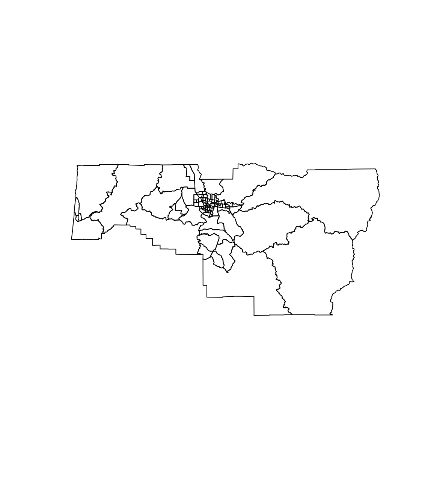
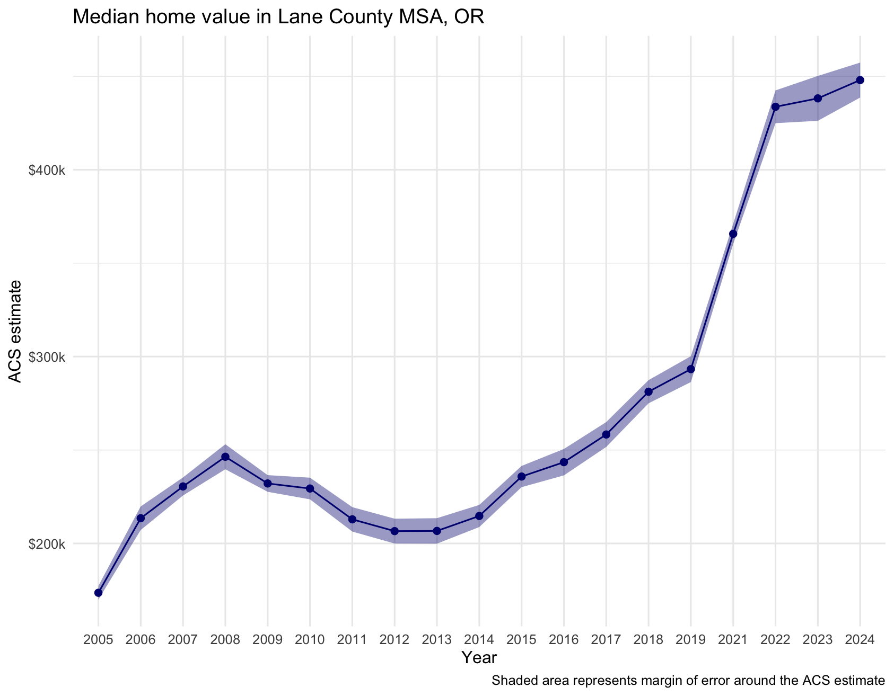
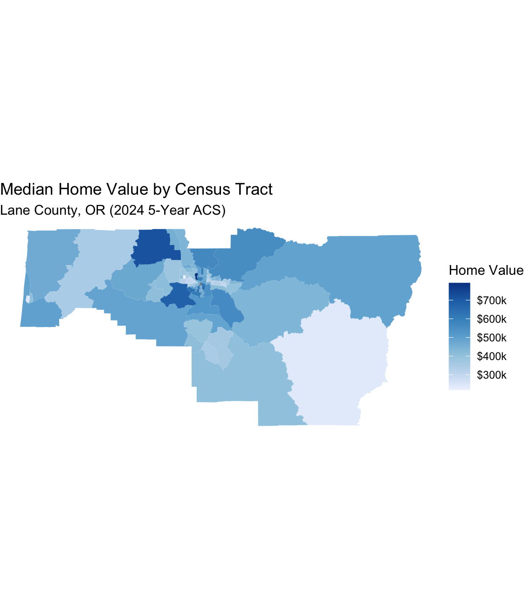
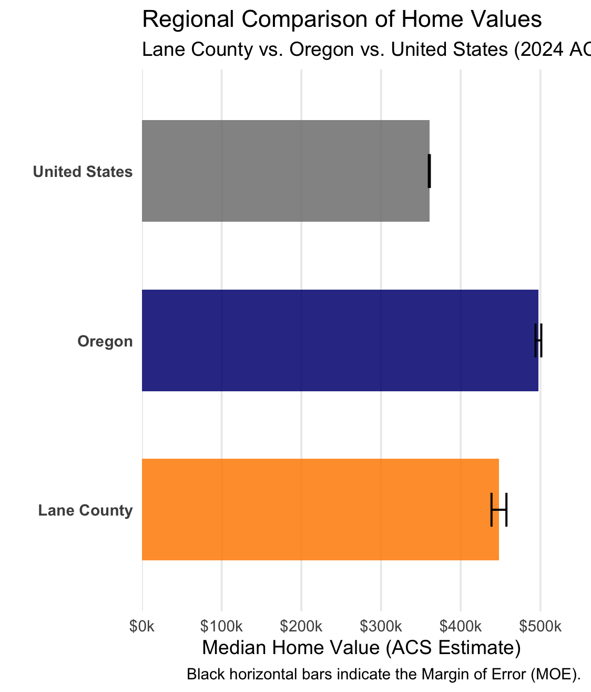
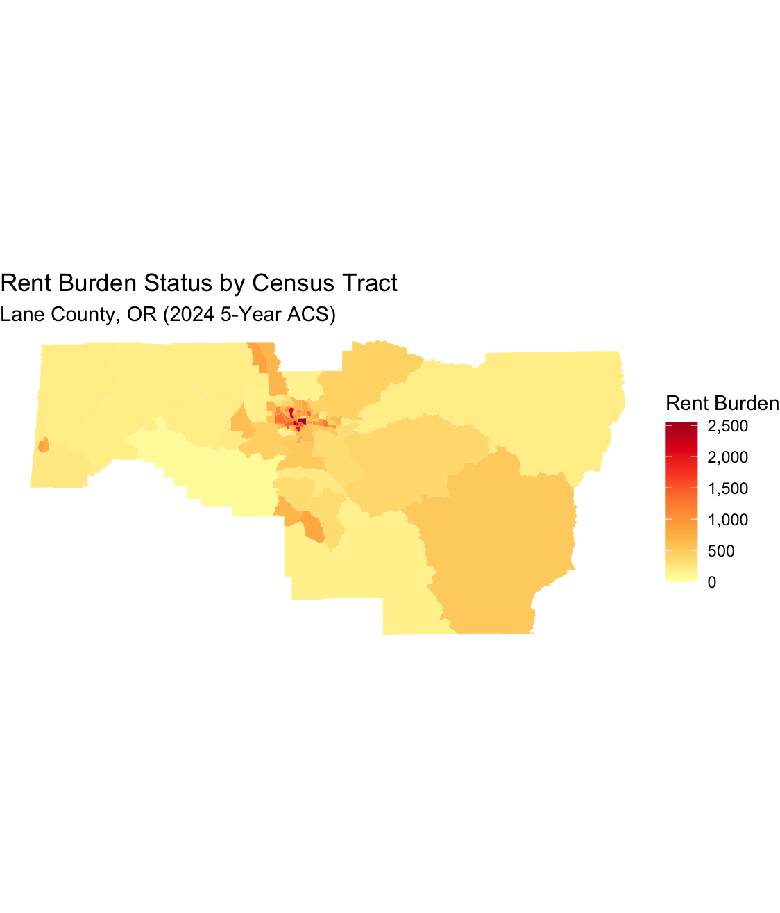
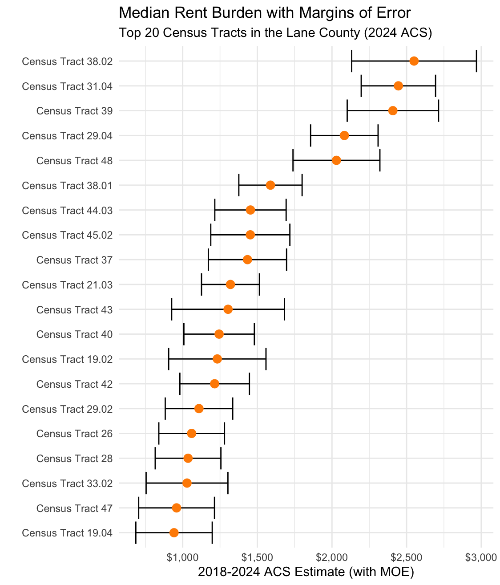
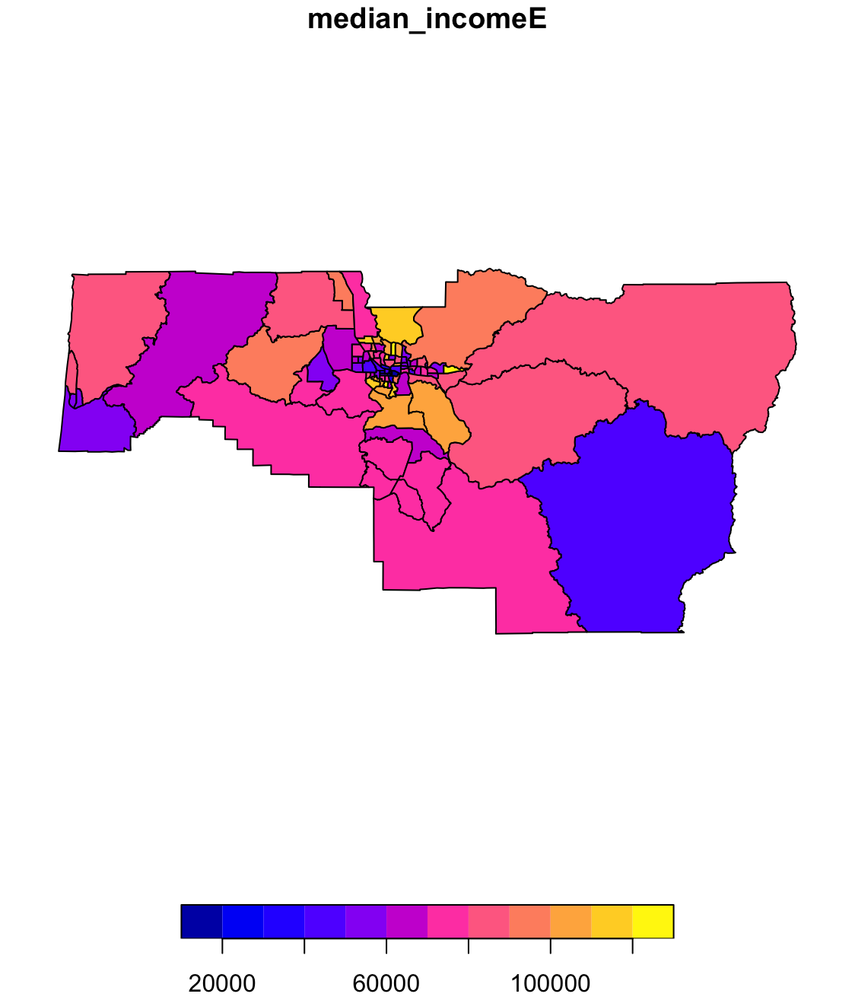

Tools: RStudio, Tidycensus, Mapbox API, Tmap
Methods: Geospatial data wrangling, API integration, bivariate choropleth mapping, and spatial autocorrelation (Moran's I).
This project leverages U.S. Census Bureau American Community Survey (ACS) data to evaluate the growing mismatch between housing costs and local incomes across Lane County, Oregon. By examining the spatial distribution of median home values, gross rent burdens, and household incomes by Census Tract, this analysis identifies stark geographic disparities between the high-density student/renter core in Eugene and the county's rural periphery. We will be looking at 3 key veriables:

Looking at Lane between 2005 and 2024 we can see a drastic increase in home values. Representing the self-reported estimate of a property's market value, this metric captures neighborhood desirability, real estate market strength, and the primary vehicle for generational wealth building within local communities.



Representing the self-reported estimate of a property's market value, this metric captures neighborhood desirability, real estate market strength, and the primary vehicle for generational wealth building within local communities.


